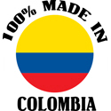

Regionalismos Colombianos
 De: La Frikipedia, la enciclopedia extremadamente seria.
De: La Frikipedia, la enciclopedia extremadamente seria.
| De la serie Diccionarios frikipédicos:
|
| Regionalismos Colombianos
|
| 
|
Mano de obra barata colombiana
|
|
| Descripción del Diccionario:
|
Usar lentes para leer,lleno de chambonalismos colombianismos
|
| Total de palabras (por cientos):
|
Cuéntenlas ustedes
|
| Encargado:
|
Usuario:Dancob
|
| Num. de colaboradores:
|
Quien quiera si es colombiano
|
| Notas:
|
Le vamos a dar piso
|
Viembenidos al Diccionario colombiano
A
- Abrirse : En Colombia,irse o largarse antes de que lo
maten golpeen
- Agria Cerveza.
- Agonía: una persona que te cayó mal.
- Alcagüetiar Cohonestar, ser permisivo en exceso con algo: Claro, siempre alcagüetiándoles la vagabundería a sus hijos.
- Alto turmequé Se refiere a reuniones o eventos a los que asisten altas personalidades.
- Alzado : Persona que es provocadora, agresiva, ofensiva.
- Amacizar Abrazar de manera lujuriosa y con segundas intenciones.
- Amarga Cerveza.
- Amarrao: Hambriento, que no caga en falda por no ver rodar el boyo. O sea, avaro.
- Amigazo:1. Término un tanto lumpenesco para referirse a alguien grato. Ejemplo: ¡Cómo me le va, amigazo Báez!. 2. (Alias) Amigazo. Juan Carlos Crespo, considerado el jefe del Cartel de la Heroína en Colombia.
- Arepizza Engendro culinario que consiste en disfrazar una arepa de pizza añadiéndole ingredientes propios de este plato. El engendro supremo es la arepizza jagüayana, es decir, una arepa con piña y jamón encima.
- Armario Individuo alto, corpulento. Jayanazo.
- Ardido : Mal perdedor.
- Arrunchis Situación de abrazo
- Áspero algo excelente o muy bien hecho
- Azarar Acción de provocar miedo o temor: "no me azare" (no me asuste, no me haga dar miedo)... "nooo eso no azara" (que alguna situacion no debe provocar temor)
- Azaroso Esta palabra se aplica en varias formas, especialmente en la región de Antioquia. Dicese de algo o alguien que genera temor o miedo: "ese callejón es azaroso". EN TERMINO FUTBOLÍSTICO o en cualquier cosa, para decir que alguien es talentoso: "uuuy ese man es azaroso"
B
- Bacano: Que gusta. Bueno. De calidad.
- Barbichona: Señora con cara de muñeca Barbie y cuerpo de lechona.
- Berraco/a: : Que se le mide a lo que sea. Saca adelante cualquier proyecto. Así sea llevar dos toneladas de coca a gringolandia, nadando y empujando los bultos.
- Billuyo: Billete, dinero.
- Boleta: Expresión gomela para decir ridículo.
- Boliar: Repartir de manera indiscriminada. Ejemplo:Ese man, como buen santandereano que es, se embejucó y comenzó a boliar cruceta.
- Bicho: Celular o teléfono. Ejemplo:Roteme el bicho gonorrea
- Bregar: Acción y efecto de joderle la vida a una persona de una manera estúpida e irritante
C
- Cacaos Los propietarios del oligopolio que se ha adueñado de buena parte del país legal.
- Cacharrear Acto mediante el cual un inexperto en la materia intenta reparar un objeto electrónico, eléctrico o mecánico. El resultado, por lo general, es dicho objeto desarmado o desbaratado sin ninguna posibilidad de redención.
- Cachimonis Del inglés, cash money. Dinero en efectivo. Contante y sonante.
- Caifás con el villegas (tebille) Expresión poco amable para pedirle a alguien que pague. Es una deformación de la de por sí deforme expresión caiga con el billete.
- Calidoso De calidad notable.
- Calletano Hecho De Quedarse Callado, No Sapear "Yo Le Robo Las Lukas a Ese Guevon Pero Calletano, Todo Bien"
- Camellar Trabajar, por lo general en exceso y a cambio de casi nada.
- Cacorro sinónimo de marica 'este es mucho cacorro
- Cantaleta Charla redundante, recriminando algo mal.
- Carrazo 1- Automovil lujoso. 2- Crack
- Carreta Inventar cosas, decir mentiras
- Cascar golpear
- Cascorbo(a) así se le llama a una persona que camina con dificultad debido a que tubo relaciones sexuales hace poco.
- Caspa/Casposo 1- Persona que posee un cuero cabelludo reseco, ejemplo: "Uy, tiene caspa o Uy, está casposo use head and shouders" 2- Persona, casi siempre un niño, que es muy hiperactivo o fastidioso, ejemplo "Qué chino tan casposo el hijo de doña X"
- Casquiliviana Que no le pone demasiado problema a una insinuación sexual.
- Catorce Favor. Ejemplo: "Hágame un catorce, présteme para el bus y mañana le pago".
- Concierto para delinquir Expresión leguleya que se refiere a actos delictivos realizados por dos o más personas de común y previo acuerdo. Muy común en los noticieros de la mañana y tarde
- Cotizar1- Pedir el precio a un producto 2- Coquetear.
- Cuadre manera de decir noviazgo o pareja. Ej: me das el cuadre?
- Cosita seria Persona de cuidado.
- Cruce Vuelta, favor. Ejemplo: Hágame un cruce, présteme para el bus y mañana le pago.
- Cuasquiladeado Desencajado, que no cuadra.
- Cuasquiladear Acción que consiste en desbarajustar una estructura.
- Cuchacha Mitad cucha, mitad muchacha.
- Cucha Tu
puta madre quien te dio la vida se dice de cariño
- Cuchibarbi Señora
anciana entrada en años que se resiste a aceptar el paso del tiempo y se somete a toda suerte de cirugías para parecer una quinceañera.
- Chasís Mujer de cuerpo escultural.
- Chaíto, suerte Tipo de despedida.
- Chibchombia Expresión inventada por Santiago Moure y Martín de Francisco para referirse a lo más abyecto de Colombia.
- Chicanear: Hacer alarde de algo.
- Chimba: : 1- Habla de algo muy bueno. 2- Habla de cierto órgano masculino de reproducción.
- Chimbiar: : Molestar a alguien
- Chimbo: 1- Digase de lo trucado,alterado. 2- Miembro Masculino
- Chino/a: Expresión para referirse a un niño/a cuando este se ha comportado mal, ejemplo: "Este chino mucha caspa" ó cuando un amigo menor de edad va a insultar a un amigo de su misma edad, ejemplo: "Este chino marica qué le pasa"
- Chinga Niño pequeño.
- Chingado Que se desplaza a gran velocidad.
- Chitiado Torcido. Término propio de la metalmecánica que se utiliza en otros frentes.
- Chiviado Adulterado.
- Chocha 1- Aparato Reproductor Femenino. 2- Individuo con buena suerte
- Chompo derivado de chaqueta que te regalo el
malparido de papa noel
- Chumbimba Dosis generosa de bala que se reparte en un encuentro a mano armada.
- Chupar Ingerir bebidas alcohólicas de manera desenfrenada. Chupar gladiolo. Estar muerto, enterrado en un cementerio
- Chupetearse Besar
- Chucha 1- Dicese del mal olor que cogen las axilas cuando o no se han bañado en dos días o no se ha hechado el suficiente desodrante, esto es sinónimo de sobaquera. 2- En la costa este termino es el aparato reproductor femenino, es decir, si lo dices en frente de tu mamá, te parten la jeta.
- Chuspa Bolsa de papel.
- Cuca 1- Es la forma más vulgar que hay para referirse a la vagina, si lo dices en frente de una mujer decente, te partirán tu jeta de un solo traque.2. Galletas Con Forma De Tableta (4 Galletas) Pero En Su Nombre Real Son Llamadas Lecheritas
- Cucayo Una vaina que le queda al arroz cuando se quema un poquito. 2. Que Le Apesta El Detras De La Vagina , En La Mujer Claro Esta
- Coleo Es la accion de pedirle gentilmente al conductor de un bus que abra la puerta de atras y cobre mas barato el pasaje. (Generalmente se pide una rebaja de 500 o 1000 pesos Colombianos)
- Cascar Dicese de la accion que describe "dar una paliza" o "pegarle a alguien"
- Chan con chanHacer un intercambio en el que las partes "generalmente dos" entregan lo acordado a la misma vez. "Demela y yo mañana le traigo la platica--- "no mijo eso es chan con chan"
- CocoAlgo hueco en su interior
D
- Dañar el caminado Poner un obstáculo que dificulta que alguien lleve a feliz término una empresa. Ejemplo: Con la caída del dólar se les dañó el caminado a los floricultores.
- Dar papaya Ponerse en evidencia. Dio papaya y la Sijín lo capturó facilito o Esa hembra me dio papaya y me la comí.
- De lavar y planchar Tranquilo, que no se complica la vida. Ejemplo: Vámonos de fiesta donde Silva, que es de lavar y planchar.
- De rosca invertida Con tendencias homosexuales.
- Desparche Sin plan. Sin oficio. Sin nada que hacer. Ejemplo: A última hora cancelaron la
puta fiesta y quedé en un desparche….
- Desatina'o Dicese de una persona (generalmente un man) que cree ser gracioso, pero que a la vista de otras persona no causa gracia y se hecha malos comentarios y chistes. También se utiliza para decir que alguien (generalmente un man) se ha "sobrepasado". (que ha hecho una broma demasiado pesada o algo fuera de contexto"
E
- El propio: Se refiere al personaje indicado en un determinado oficio.
- Embejucarse: Enfurecerse
- Embarrar, Embarrada: hacer algo mal, fallar
- Emberracarse: Enfurecerse.
- Emputarse: Enfurecerse.
- Envainado: Enredado con asuntos sentimentales, Atareado
- Engallar: Adornar, decorar en exceso, por lo general con el ánimo de hacer ver algo más fino de lo que es. Ejemplo: Ese man engalló el Simca con alerones, spoilers y un escudito de Mercedes Benz y le quedó rebacano.
- Envainado: Enredado con asuntos sentimentales, Atareado
- Erre: Entendido. Expresión que se origina en llamadas a larga distancia.
- Escupir para arriba: Hablar mal de algo que afecta directamente a quien lo hace.
- Estrénela: Expresión que se usa para decirle a otra persona que piense, ejemplo "Pero, es que usted si, ¿no? Estrenela mamita"
F
- Farra Fiesta muy grande casi siempre de gente joven, ejemplo: "Uy güevón estoy aburrido, vamos a la farra de Silvia"
- Fetecuar Dar de baja. Término casi en desuso pues se refiere a Manuel Vicente Fetecua, empresario bogotano cuyo negocio era demoler casas y edificios.
- Fiambre 1. Sinónimo de muñeco, muerto, cadáver. 2. Comida que se empaca en un recipiente hermético y se lleva a un viaje. Usualmente con la intención de no gastar dinero en restaurantes.
- Filo Hambre: "tengo un filo que si me agacho me corto" (una expresion que indica que el hablante tiene mucha hambre)
- Fore En colegial significa JÓDETE HIJO DE LAS GRANDES o simplemente jodete.
- Fritar un cliente, acostar un paciente: en idioma sicario dar de baja, matarlo, librarse de la oposición, el gremio sicario es el mayor empleador de jóvenes en las comunas pobres.
- Fría Una cerveza en Costeñense
- Fufa/Fufurufa Mujer de buena vida que por unos pesos te dice mi amor y hace cositas ricas. Prostituta
- Furrusca Fiesta de grandes magnitudes.
G
- Gallinacear Coquetear de manera burda.
- Gallo Algo inesperado, un inconveniente. "Pues a ese negocio le salió un gallo que ni para qué le cuento".
- Gas Algo que da asco, "Que gas de música".
- Gasimba Bebida carbonatada dulce.
- Gonorrea insulto común de la región "este si sera mucha la gonorrea".
- Gomelo(a) joven que vive con una buena condición economica. Visten generalmente de una forma parecida a los emos
- Guachimán 1.Celador, vigilante. Viene del inglés watch man, el hombre que observa. 2. Persona de modales burdos. Maleducado
- Guaro Aguardiente.
- Güeva 1. Testículo. 2. se emplea para decirle a tu amigo si que eres tontico pero a lo colombiano, o sea, Oiga usted si mucha güeva, o para resaltarle que ha fallado en algo Mucha güeva, perdimos el partido por usted...
- Güevón forma muy amigable de decirle a alguien amigo (no es broma)
H
- Hacer el oso Hacer el ridículo.
- Hacerse el de las gafas Hacerse el que no es con uno. Hacerse el loco.
- Hacer(se) la paja Masturbarse.
- Hacer la vaca reunir dinero para un bien común.
- Humillapendejos montador, abusador.
- Hey: expresion que se utiliza para llamar a alguien o para desaprobar lo que esta haciendo. "Hey, Hey Hey, Hey" (un colombiano decente embarracado) o "Hey, Hey, Hey, Hey, y cómo para donde va el Señor/a" (Padre de familia decente viendo que su hijo/a va a salir a altas horas de la noche)
I
- Iguazo Persona de baja condición social, cultura insuficiente y/o aspecto poco agraciado. Cani o Flaite en el extranjero
J
- Jeta dicese de boca cayese la jeta
- Jijueputa forma de pronunciación colombiana de "hijo de puta"
- Joder, Jódase, Jódanse Fastidiar, tirarse las vainas, cuando a uno todo le sale mal. Estropear una cosa o impedir que un proyecto salga bien, Molestar o fastidiar, Expresión que denota sorpresa, admiración o fastidio.
- Joyita Individuo cuyo comportamiento deja mucho que desear.
- Juepuerca manera de decir : falle,lo hice mal
L
- Lámpara, Lamparoso/a Persona que es muy molesta y al mismo tiempo egocéntrica.
- Levante Persona que ha sucumbido a los encantos de otro o que, en el peor de los casos, se presta a salir con el susodicho. Ejemplo: En ese viaje a Aruba me hice un levante que ni para qué le cuento.
- Loca 1-gay, homosexual 2- mujer alborotada
- lobo de mal gusto, recargado. Lobo_nito.
- Lucas 1-Nombre para perros o personas 2-dinero en pesos colombianos (30 lucas son 30.000 pesos)
M
- Machucar Ejercer presión sobre algo. Ejemplos:Me machuco los dedos"
- Machuque o machucante Novio, amante, compañero.
- Mamado Csansado, agotado
- Mamera Cansancio
- Man, Mano manera colombiana de decir la palabra hombre
- Mandinga es un personaje muy famoso en colombia ya que es el que tiene el record mundial de tener la polla mas grande..... tambien se conose con este nombre a personas de color
negro que se presume tienen grande la monda
- Muñeco Víctima de un asesinato o de una muerte violenta.
- -Menta Sufijo que se utiliza para expresar una cantidad modesta o una generosidad sobresaliente. Ejemplos: la chinamenta, la tetamenta.
- Marca gato Objeto de fabricación de dudosa calidad y/u origen:Claro que mi tocadiscos es marca gato
- Metacho Jebi
- Meterle la chancleta Acelerar un vehículo a fondo. Manejar muy rápido.
- Mico 1-Trampa que realizan los legisladores para hacer pasar de manera inadvertida leyes que por lo general benefician intereses privados en detrimento de lo público. 2-Niño que quiere montarse en todo lo que ve, ejemplo "Usted mucho mico, mario"
- Mitimiti Expresión popularizada por los funcionarios Rodrigo Villamizar y Saulo Arboleda. Se refiere al acto de repartirse un negocio ilícito por mitades.
- Morrongo Que hace sus conquistas amorosas en silencio, sin aspavientos, sin que nadie lo note.
- Mondá Termino usado generalmente en la costa atlántica y que hace referencia al miembro sexual masculino, pene (verga, palo, chorizo, tercera pata, la del burro, etc).
También puede usarse igual quee vaina ej: !Deja esa mondá quieta!.
Como plato fuerte: valla y coma monda, chupa monda
como distancia: esa monda si esta lejos
como descripcion corporal: cabeza é monda, cuerpo é monda
como alago : ese(a) man/vieja es la monda
como amenaza (tomarcele en serio si te la dice un negro casi morado): te voy a dá es monda!, chupate esta monda
como pasatiempo: ve y soplate una monda
como cualidad implicita de las cosas: esta vaina es la monda
como duda metodica: que es esa monda?
como estado de animo:¡ me siento la monda!
'como discriminativo: la monda esa
como insulto: "...mira tu maldito hijuéputa zampa verga triplestronchamonda ....." para que la frase suene insultante decirla a una velocidad de reproduccion de x16, gitando, caminando hace la victima y señalandola a la cara.
- Marica 1- Gay, homosexual. 2- expresión que a veces reemplaza a las palabras tonto o bobo ejemplo "No tenga miedo, no sea marica". 3- Forma como se llama a un amigo/a en la actualidad, ejemplo, "Ay, marica vamos al cine con Pepita y Juanita, ¿si?"
- Malparido/a: Insulto. Originalmente nació como la fusión de las palabras "mal" y "parido", alguien a quien lo parieron mal, pero hoy en día se utiliza para enfatizar despectivamente en las actitudes repulsivas de una persona, animal o cosa. Ejemplo "Ese man es un MALPARIDO, insulto a mi novio" ; "malparido hijuéputa" insulto a cualquier ser viviente; "triple malparido" que puedes nacer tres veces y de todos modos seguiras siendo un hijuéputa.
N
- Niche Persona afroamericana. Palabra procedente del Grupo Niche
- Nocas manera ñerastica de decir no
- No le copio No le entiendo. Expresión que se origina en las telecomunicaciones en condiciones difíciles. En algunas partes tambien se utiliza para decir: "no le tengo miedo"
- Nos pillamos A manera de despedida, nos vemos
P
- Pailander Manera sofisticada de decir 'pailas', que a su vez es una manera metafórica de expresar contrariedad. Ejemplo: Quedó pailander cuando le dijeron que no podía ir al paseo.
- Paletiarse: cuando un ser vivo o un aparato deja de vivir.
- Papayazo Gran oportunidad.
- Paraco Terrorista afiliado al gobierno
- Parce, Parcero Palabra de origen portugués que significa amigo, compañero.
- Pato sinonimo de "desatinado" (Ver definición)
- Pelar y pagar Avisar a alguien de que va a ser asesinado por usted, y que se esta dispuesto a cumplir la condena de carcel por homicidio. Ejemplo: "te pelo y te pago!"
- Pendejo 1- Término santandereano usado para reemplazar la expresión "eres tonto" y mejor decir Oiga mano pero usted si es que es mucho pendejo, asi pues tambien tiene su derivado pendejada que es para reemplazar el "deje la bobada" por "oiga va a dejar la pendejada o qué". 2- Expresión costeña para referirse a los pelos del culo (y no es broma).
- Perico 1- Droga de baja calidad. 2- Café con leche. 3- Huevos revueltos con cebolla y tomate.
- Pero dele para el bus Expresión futbolística. Reclamo que se le hace a un jugador que le envía a un compañero un pase demasiado largo.
- Pichurria 1- Cantidad o calidad mísera, despreciable: Ese sueldo que me pagan es una pichurria. 2- Expresión empleada como insulto y que se le dice a alguien que ha sido mala persona o tacaño Usted si mucha pichurria, no
- Pingo Termino santandereano para referirse a alguien tonto o fastidioso, ejemplo "Este pingo va a dejar la pendejada o me va tocar darle su tanda'e palo pa que aprenda"
- Pinta1- Individuo. Ejemplo: Ojo, mejor no se meta con ese pinta que es como amigo de Mancuso. 2- Refierese a ropa nueva Uy, mire la pinta que me compré pa' estrenarme el 24 de diciembre
- Pirobo Manera de referirse a una persona que te cae mal o que es mala persona. También se usa en
tu casa el bajo mundo como objeto de broma para llamar a alguien. Ejemplo: "Venga pirobo hágame un cruce
- Pisca Manera despectiva de referirse a una mujer, sobre todo a su ligereza en materia de sexo y amoríos.
- Pispa Bonita, de buen aspecto físico.
- Pochecas,alimentadores: senos, ayuda extra de las mujeres para conseguir un empleo mejor pago.
- Pola Cerveza
- Polvo el acto que da origen a la vida, en la filosofía chibchombiana origen y fin de la vida porque de un polvo naciste y en polvo te convertirás.
- Ponerse la pilas: abrir bien los ojos, estar atento a cualquier vaina que llegue (también puede tomarse como
amenaza consejo:"¡Póngase las pilas, parce!")
- Póngame a correr Término futbolístico. Por lo general lo utiliza un jugador que pica a un espacio vacío, donde espera que llegue el balón.
- Pordebajear Darle menor rango a una persona, animal o cosa.
- Por debajo de cuerda A escondidas, sin que
ningún malparido nadie se dé cuenta. Ejemplo: Fresco que yo le pago por debajo de cuerda para que no tenga que presentar factura ni RUT.
- Por el ladito Hacer algo a escondidas, sin aspavientos, sin que se note mucho.
- por la misma Término futbolístico. Quien esto exclama le pide a un compañero que le devuelva el balón que acaba de entregar.
- Pupitrazo limpio Mecanismo que utilizan los legisladores para aprobar leyes a gritos.
- Pija palabra usada por los llaneros para expresar emocion o sorpresa 'pija pariente'
- Paisa Persona proveniente de Antioquia. Se dice que en cada pais del mundo hay un
maldito colombiano, el cual es un paisa y es casi siempre el que tiene un negocio donde se vende mas barato o es un buen comerciante por lo general.
- Pintela que yo se la "coloreo" colombiano con ganas de peliar. Generalmente el que más ganas tiene de pelear lanza esta frase.
- pin-pon Forma colombiana de decir "ping-pong"
Q
- ¡Qué ceba! Expresión de asco profundo que puso a circular hacia 1976 el entonces alumno Jorge Bachmann cuando estudiaba en el Colegio Helvetia.
- ¿¡Qué qué!? Se utiliza para hacer enfasis en que una noticia no causo agrado o fue sorprendente-- Fragamento de la cancion Rikarena. "que que, que que, rikarena"
R
- Reconózcame el bailado Término futbolístico. Quien esto exclama le pide al compañero que le pase el balón.
- Rochela Relajo, desorden.
- Roscón(a) Marica, homosexual, lesbiana.
- Rumbearse a... Acceder a los servicios amatorios de alguien sin que dicho proceso genere un compromiso ulterior.
S
- Sacar la piedra o el cascajo Acto de enfurecer a alguien.
- Sardino(a): adolescentes y jóvenes, se exportan a todo el mundo como esclavos sexuales y mulas de carga.
- Sapear Acusar, delatar
- SalchipapaPlato típico del folclor urbano de la rumba callejera que consiste en un amasijo de papas a la francesa freídas en aceite reciclado y salchicha de baja calidad. Inspirado en el también muy grasiento fish and chip inglés.
- Sisas ,Sicas, Sisarras Manera ñerastica de decir si
- Sol palabra usada en dimnutivo en una cancion que enseñan en todas las escuelas y hogares: "sol solesito calientame un poquito..."
- Sopita (o arrocito) en bajo Literalmente, que se cocina a fuego lento. En lenguaje figurado, ser amado o querido que no oficia en ese momento pero que se tiene como eventual reserva en caso de necesidad.
- SumercéTermino coloquial campesino para decir Tu
T
- Tanda Termino santandereano que es el castigo preferido de los padres lo cual consiste en coger, casi siempre un palo, o si se es muy sanguinario, un cable y golpearlos cuando se han portado mal.
- Terapear Se pronuncia terapiar y significa robar. Ejemplo: Usted le terapeó las lucas al Juan.
- Tragarse, estar tragado, enzorrarse: enamorarse, estar enamorado, ch.
- Tinieblo Amante con el que es mejor no dejarse ver en lugares públicos.
- Toche puede referirse a : 1 un pajaro 2 insulto santanderiano que significa: no sea pendejo
- Tole Fragmento de algo. Regáleme un tole de gaseosa.
- Tombo 1 un aguacate un policía, persona que no deja trabajar a los colombianos. 2 pronunciación del arma bolillo
- Toque Concierto. Ejemplo: Esta noche no puedo trabajar de noche porque voy a ir a un toque de Nawal, Odio a Botero y Pornomotora.
- Traque Dicese del golpe que se da con la mano cerrada, con el objeto de dañar o romper alguna parte del cuerpo del oponente (sin razon aparente). Ejemplo: "Ese pirobo me rompio la geta de un traque reaspero que me metio"
- Tarrao Expresion generalmente utilizada por las mujeres colombianas para indicar que un hombre es "pinta".--- Tarro grande.
- Todo bienUna forma de despedirse--- Amenaza, generalmente despues de no hacer un favor: "hey haceme un catorce-- No!-- a listo, TODO BIEN"
- Tuqui Tuqui Lulú Véase paila.
U
- Ublime persone descubierto por la cantante colombiana Shakira Isabel y arrojado a luz publica en la cumbre de las Américas, del cual sólo se sabe que su libertad desgarra las auroras de su invencible luz.
- Uno aparte de su utilizacion numerica, se utiliza como reemplazante de los pronombres "yo" o "nosotros", siendo mas utilizado para este ultimo cuando el hablante no quiere admitir una tonteria hecha por el mismo, sino que asume que todo el genero humano la comete. "UNO es una gueva" (Todos somos tontos" . "Uno le tiene que soltar el clutch suavesito" --Un colombiano dando clase de conduccion-- (Aunque le este hablando a alguien en especifico, se refiere a que cualquier persona en esa situacion debe soltar el clutch del vehiculo suavemente)
V
- Vaina Cuarquier cosa, puede usarse para referirse a un evento: ¿Cuándo es la vaina esa? a un un objeto en particular: ¡Tráeme esa vaina! o un comportamiento: Deja es vaina, pareces marica.
- Ventiao Adjetivo que se utiliza para expresar que algo se hace indiscriminadamente o en cantidades exageradas.
- visaje 1. Cualquier cosa de la que se desconozca el nombre. Ejemplo: "Pasame ese visaje de allí" 2. Sinónimo de "Dar papaya". Acción de hacer hacer en público algo que no se debe, no por inapropiado, si no por que sean "pillados" o descubiertos. "Guarde la copia, no de tanto VISAJE que ahí viene el profesor" "A esos manes les dieron cambomba porque estaban dando mucho VISAJE"
- Videoso Adjetivo que denomina a un persona o cosa complicada, exagerada o rebuscada. Ejemplo: que jijueputa tan videoso.
Y
- Yuca sinonimo de "paila(s)". "A no parce, yuca" (Si eres el receptor de esta frase significa que te han "tumbado", estafado, engañado, o has perdido algo)
Z
- Zunga. Dama por la cual acambio de unas polas o un calado se pueen conseguir los servicios del rumbeo... y algo mas.
- Zorra. 1- Mujer que es prostituta, guarra, puta o como le quieras decir o tambien es una expresión de insulto para una niña que te caiga mal Esa zorra me las va a pagar. 2- Animal cuadrúpedo que han dañado su nombre volviendolo un insulto. 3- Medio por el cual los recicladores transportan cuanta porqueria encuentran en la calle. Consta de una estructura hecha con palos de la peor calidad formado por una plancha que es donde se pone todo, con rueditas debajo para mayor facilidad y otros palos puestos de manera vertical para que la persona empuje.
Autor(es):
- Fordus
- Didawd
- Karmadeath
- Jetray96
- Windrumer
- Genericool
- Dancob
- Klj galvis
- Jorgito.rxn
- JF
Frikipedia 2005-2016, Licencia
GFDL 1.2 - Extraído por FrikiLeaks